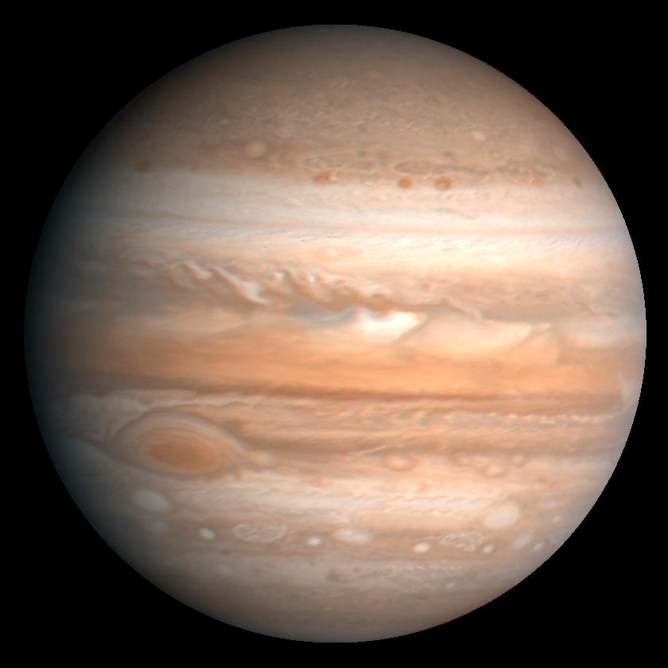

About Jupiter
Jupiter is the largest planet in the solar system. It is a gas giant made mostly of hydrogen and helium, and it does not have a solid surface like Earth.
One of Jupiter's most famous features is the Great Red Spot, which is a massive storm that has been raging for hundreds of years. It also has dozens of moons.

Jupiter is the largest planet in the Solar System and is classified as a gas giant. It is made mostly of hydrogen and helium and is known for its colorful cloud bands that swirl across its atmosphere. One of its most famous features is the Great Red Spot, a massive storm that has been raging for centuries and is larger than Earth. Jupiter's powerful gravity has a major influence on the Solar System, affecting the motion of many objects, including asteroids and comets, and sometimes pulling or redirecting them. The planet also has a very strong magnetic field and numerous moons, making it an important subject of study for understanding how giant planets form and shape their surrounding space environment over time.
TThe planet has a strong magnetic field, faint rings, and a very large number of moons orbiting it. Some of its moons, such as Europa and Ganymede, are major targets for scientific research because they may contain subsurface oceans beneath their icy surfaces. These hidden oceans raise the possibility of environments that could potentially support life, making them especially interesting to scientists. Jupiter is an important planet for understanding planetary formation and the early history of the Solar System, as its massive size and gravity have influenced how other planets and objects developed over time. Studying Jupiter and its moons helps scientists learn more about gas giants, orbital dynamics, and the conditions that existed when the Solar System was first formed.
Educational Video
This video explains the Jupiter.
Key Facts
- Distance from Sun: 778.5 million km
- Number of Moons: 95
- Type: Gas Giant
- Day Length: 10 hours